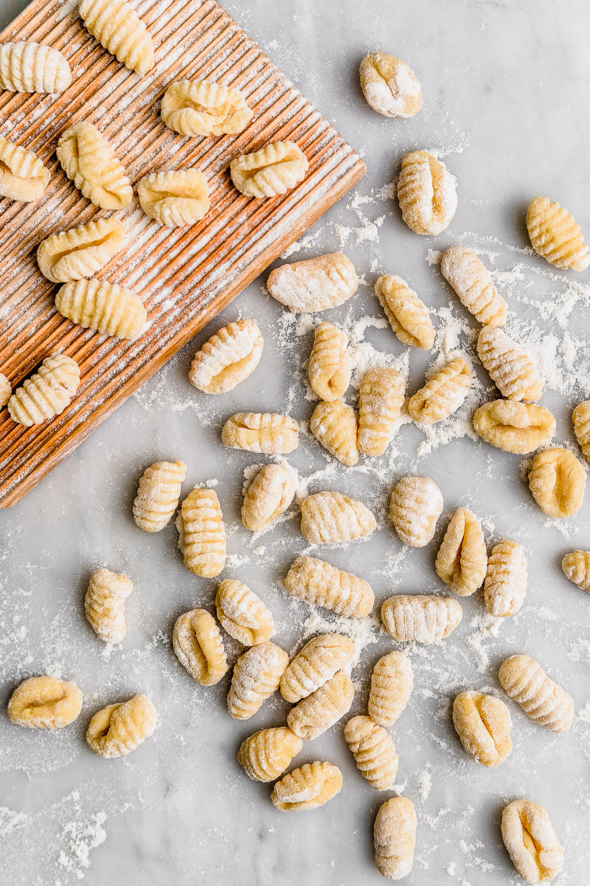

Gnocchi

Gnocchi are a varied family of dumpling in Italian cuisine. They are made of small lumps of dough composed of semolina, ordinary wheat flour egg, cheese, potato, breadcrumbs, cornmeal or similar ingredients including herbs and vegetables.
The dough for gnocchi is most often rolled out before it is cut into small pieces about the size of a wine cork. The gnocchi may be pressed with a fork or a cheese grater to make ridges or cut into little lumps. They are usually eaten as a first course, but they can also be served as a side dish to some main courses.
Ingredients
- 2 potatoes
- 2 cups all-purpose flour
- 1 egg
Steps
- Bring a large pot of salted water to a boil. Peel potatoes and add to pot. Cook until tender but still firm, about 15 minutes. Drain, cool and mash with a fork or potato masher.
- Combine 1 cup mashed potato, flour and egg in a large bowl. Knead until dough forms a ball. Shape small portions of the dough into long "snakes". On a floured surface, cut snakes into half-inch pieces.
- Bring a large pot of lightly salted water to a boil. Drop in gnocchi and cook for 3 to 5 minutes or until gnocchi have risen to the top; drain and serve.
- Enjoy
Home